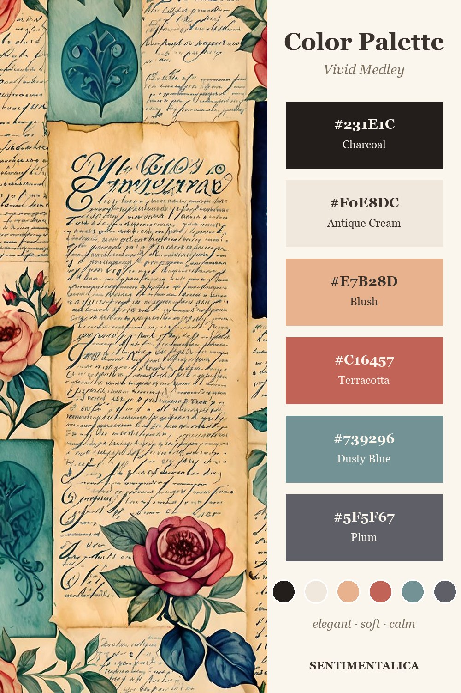

A strong palette makes a busy junk journal page feel planned. Vivid Medley is useful because it gives you dusty blue, terracotta, blush, cream, plum, and charcoal in one family.

Use dusty blue as the calm color
When the page starts feeling too warm, add dusty blue as a strip, label, or backing paper.
Use terracotta as the heartbeat
Terracotta should appear in small repeats: a flower, a tab, a stamp edge, or one torn scrap.